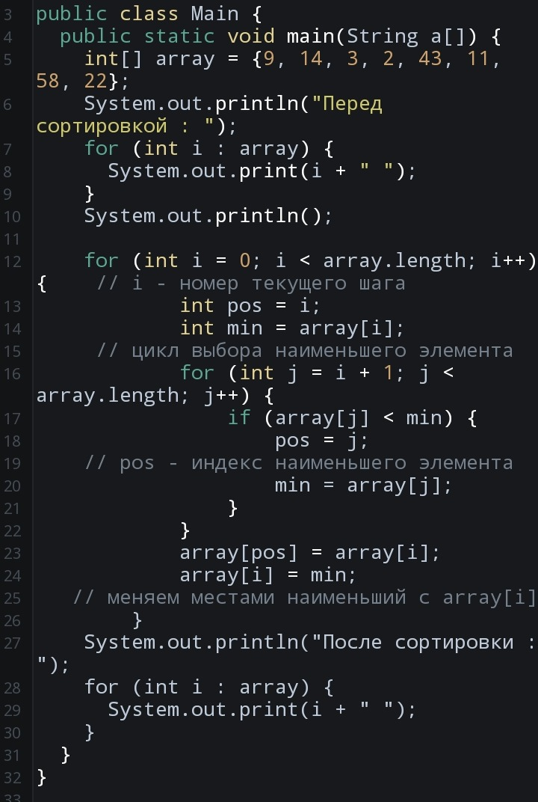

Алгоритм сортировки выбором заключается в поиске на необработанном срезе массива или списка минимального значения и в дальнейшем обмене этого значения с первым элементом необработанного среза. На следующем шаге необработанный срез уменьшается на один элемент.
Выберите, какой алгоритм вы хотите изучить:
Сортировка пузырьком